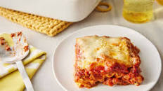

Lasagna Recipe

Lasagana Description
Lasagna is a classic Italian dish made with layers of pasta, meat sauce, and cheese. It's a delicious and hearty meal that is perfect for gatherings or family dinners.
Ingredients
- Lasagna noodles
- Ground beef
- Onion
- Garlic
- Tomato sauce
- Ricotta cheese
- Mozzarella cheese
- Parmesan cheese
- Italian seasoning
- Salt and pepper
Steps
- Cook the lasagna noodles according to the package instructions. Drain and set aside.
- In a large skillet, cook the ground beef, onion, and garlic until the beef is browned and cooked through. Drain any excess fat.
- Add the tomato sauce to the skillet and season with Italian seasoning, salt, and pepper. Simmer for about 10 minutes.
- In a separate bowl, mix together the ricotta cheese, grated Parmesan cheese, and a pinch of salt and pepper.
- Preheat the oven to 375°F (190°C).
- In a baking dish, spread a thin layer of the meat sauce. Place a layer of lasagna noodles on top. Spread a layer of the ricotta cheese mixture over the noodles. Sprinkle some mozzarella cheese on top.
- Repeat the layers until all the ingredients are used, ending with a layer of meat sauce and a generous amount of mozzarella cheese on top.
- Cover the baking dish with aluminum foil and bake for 25 minutes. Then remove the foil and bake for an additional 10-15 minutes until the cheese is golden and bubbly.
- Remove from the oven and let it cool for a few minutes before serving. Enjoy your delicious homemade lasagna!